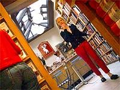
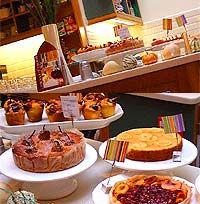
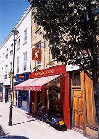

The test kitchencookbooks are put to the test in our café at the back of the shop
Workshopscookery classes take place in the demonstration kitchen upstairs
The books
In this shop we really do cook the books.
We do not keep a catalogue: with 8,000 plus books on the shelves, new titles being published every week and current titles coming in and out of stock and availability every day, a comprehensive, up-to-date, listing is an impossibility.

Shelves crammed with books reaching from floor to ceiling.
And do remember that our stock far exceeds the realm of simple recipe books to include:
foodie fiction
history
biography
nutrition
art
sociology
chemistry
gourmet cards and posters
A book list for your interest
If you have a particular area of interest (e.g. bread, Thai, chefs etc.), we are delighted to provide a current book list with our own Books for Cooks recommendations too.
We can send books anywhere in the world; postal charges vary according to destination. We accept most credit and debit cards as well as sterling cheques. Please phone, fax, e-mail or write to us with all your details.
Remember that any books returned to us by post are at your expense and cannot be credited if damaged. We prefer to offer exchanges or credit notes against returned books.
The test kitchen
“The best smelling shop in the world”
A special reputation that it owes entirely to the tiny test kitchen sandwiched between the bookshelves at the back of the store. Everyday recipes are tested from the cookbooks on the shelves by one of Books for Cooks' resident chefs.

Everyday, at the handful of tables squeezed into an alcove between the bookshelves and the kitchen, customers can sample:
splendid lunches
fantastic home-baked cakes
the best cup of coffee in Notting Hill, until everything runs out
The menu changes daily as what's on the seasonally changing stalls of Portobello market and which of the thousands of cookbooks on our shelves is being put to the test determine the dish of the day.
Our very own cookbooks
Our most popular recipes from the test kitchen.
The books take the form of a recipe sampler featuring the best-tasting dishes from the books tested throughout the year. They consist of about seventy-five eclectic and imaginative recipes that truly capture the flavour of the test kitchen, plus plenty of tips, chat and stories all in the spirit of the store.
£5.99Each book costs £5.99.
Favourite Recipes from Books for Cooks 1, 2 & 3
Our favourites recipes (including Corn Soup with Red Pepper Purée, Honey & Chilli Chicken Salad, and Upside Down Pear & Ginger Pudding) from our first three cookbooks in a splendid one-volume compilation.
Favourite Recipes from Books 4, 5 & 6
Test kitchen favourites such as Tomato, Lentil & Orange Soup, Grilled Chicken Salad with Roast Garlic & Basil Dressing, and Orange Meringue Cake.
Books for Cooks 7
Goodies include Tomato & Tamarind Soup with Toasted Spices, Aromatic Pork Belly Hotpot, and Cinnamon Swirl Sour Cream Cake.
Books for Cooks 8
New favourites include Beetroot & Date Dip, Parsnip & Smoked Fish Cakes with Tomato & Horseradish, Sweetcorn Fritters, plus a bumper collection of sweet treats including Strawberry Meringue Cake and Double Ginger Cake.
Books for Cooks 9
A feast of new favourites gathered from the best recipes tested in the Books for Cooks test kitchen.
The demonstrations will be based on specific cookbook titles and will be taking place in the afternoon from 3pm to 5pm.
3pm to 5pmtaking place in the afternoon
Sample recipesparticipants will be given sample recipes demonstrated
A feastand will feast on all the food prepared
Updated monthlysubject matter and chosen recipes, to coincide with new releases
The workshops have moved upstairs into a custom-built demonstration kitchen of their own.
Our cookery workshops began in 1995 when, in response to the ever-increasing enquiries about cookery demonstrations, Eric with Ursula Ferrigno (our resident Italian cook) pinned up a notice in the shop advertising a mere handful of classes. We were overwhelmed by the enthusiastic response of our customers.
For timetables and availability, please email or call the shop. Space is limited so pre-booking is required.
Books for Cooks was founded in 1983 by Heidi Lascelles. Heidi's aim to stock as many different cookbooks as she could find, and her readiness to track down a wanted book from whatever corner of the globe it came and then to despatch the book to whatever corner of the globe from which it was requested, soon earned the store a large international clientele.
In the new larger shop across the road, Heidi installed a kitchen where she hoped recipes might be tested and the cookbooks on the shelves brought to life.
“We are able to put theory into practice. Food here is not just something to be perused in books, it is something to be cooked, eaten and enjoyed. We can then really champion the books in which we know the recipes really work.”
Opening times & how to find us
4 Blenheim Crescent, Notting Hill.
Our part of Blenheim Crescent runs between the Portobello Road and Kensington Park Road in the Notting Hill area of London.

Books for Cooks4 Blenheim Crescent, Notting Hill, London W11 1NN
OpenTuesday to Saturday, 10.00am to 6.00pm
ClosedWe are closed on Sundays, Mondays, Bank Holidays, the last three weeks of August, and ten days over Christmas and New Year, including Christmas Eve.
The nearest tube stationis five minutes away at Ladbroke Grove (Hammersmith and City Line), while Notting Hill Gate (District, Circle and Central Lines) is a 10 minute walk up the Portobello Road.
By carDuring the week, aim for the four-hour parking meters on Westbourne Grove.